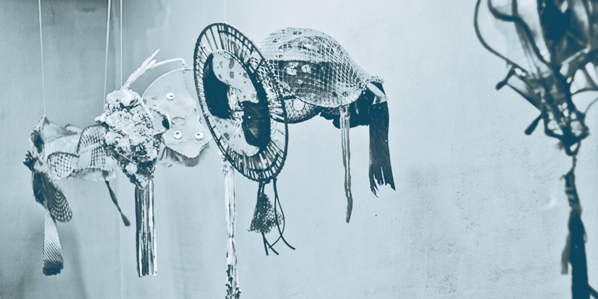
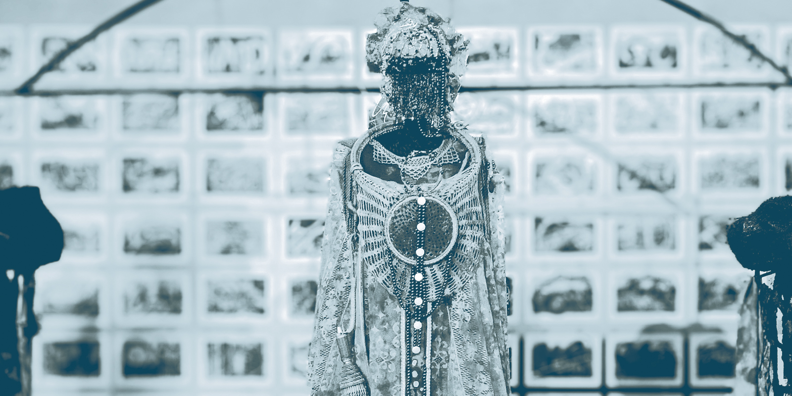
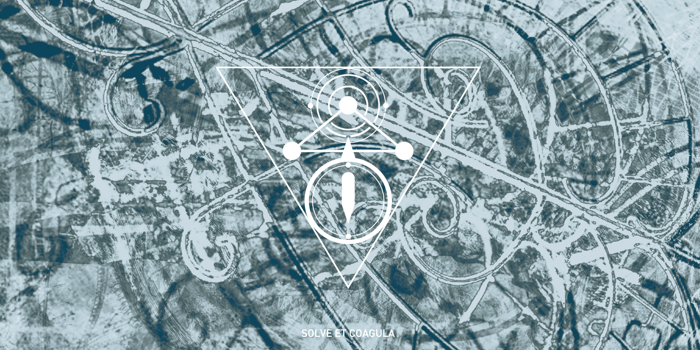
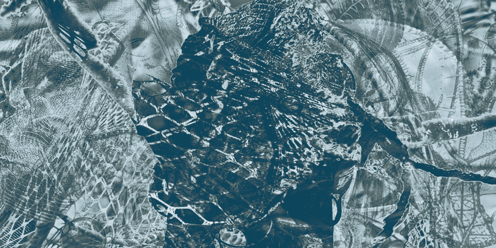
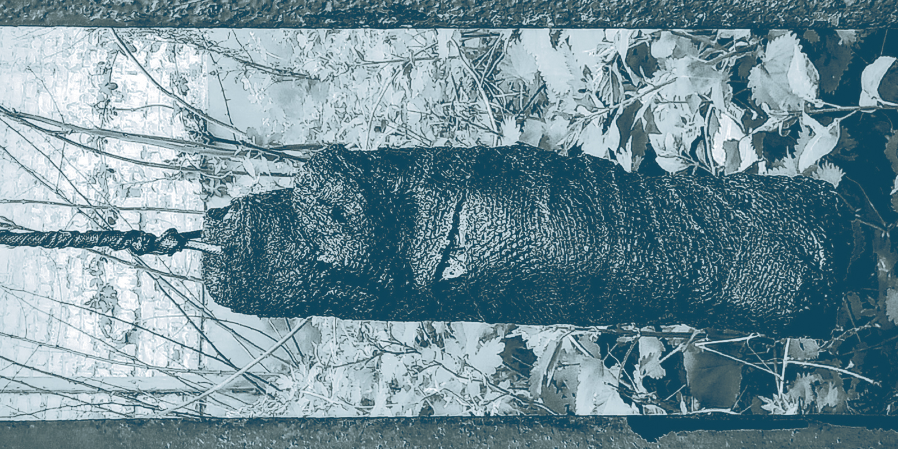

Masques, parures, installations, dessins, formes en projet et vidéos.

Formes portées, formes activées
Masques et parures ne relèvent ni du costume ni de l’ornement au sens décoratif, mais d’un travail sur la présence. Le masque est un espace liminal ; la parure charge le corps, modifie sa gravité. Ensemble, ils ouvrent un autre régime d’apparition, entre tension et seuil.
VOIR LA SÉLECTION
Espace, circulation, condensation
Les installations prolongent la pratique à l’échelle de l’espace. Elles articulent formes, matières, son et lumière dans des dispositifs où le sens ne se donne jamais d’un seul bloc. L’espace investi devient un lieu de circulation, de condensation et de transformation. Le déplacement et la durée deviennent eux aussi des matériaux.
VOIR LES INSTALLATIONS
Émergences, formes en veille
Le dessin accompagne le travail comme lieu de mise à l’épreuve et de surgissement. Il ne sert pas uniquement à préparer une pièce ; il constitue un lieu autonome où apparaissent des tensions de forme, des rythmes, des rapports de masses et des figures encore instables. Entre geste automatique, esquisse et élaboration, les dessins gardent la trace d’un travail en train de se chercher, parfois en amont des œuvres, parfois à côté d’elles.
VOIR LES DESSINS
Ensembles et recherches en cours
Cette section rassemble des études de projets en gestation. Des intuitions qui déploient le travail dans le temps. On y trouve des formes déjà constituées, d’autres encore ouvertes, ainsi que des articulations entre sculpture, parure, installation, texte et image en mouvement.
VOIR LES RECHERCHES
Image en mouvement, formes traversées
La vidéo prolonge le travail par le temps, le son y interroge le geste et la durée. Les vidéos apparaissent ici comme des expérimentations situées : des traversées, des mises en tension entre matière visuelle, espace, son et temps.
VOIR LES VIDÉOS